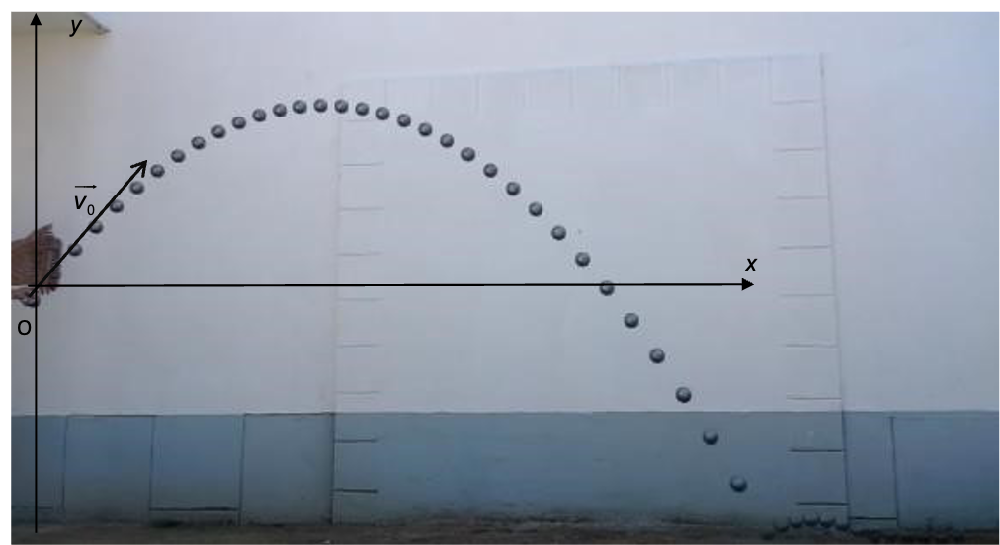

L’éthanoate d’éthyle est un liquide incolore de formule topologique :
Recopier la formule topologique fournie et entourer le(s) groupement(s) fonctionnel(s). (0,5)
À quelle famille de composés organiques l’éthanoate d’éthyle appartient-il ? (0,5)
C’est la réaction entre l’éthanoate d’éthyle et une solution de soude (par exemple) que l’on nomme saponification. L’équation chimique associée s’écrit : \[\ce{C4H8O2(aq) + Na+(aq) + HO-(aq) = Na+(aq) + A-(aq) + B(aq)}\]
Écrire la formule semi-développée de l’espèce chimique . Donner son nom. (0,5)
En illustrant votre propos par un schéma légendé et des flèches courbes, décrire la première étape nécessaire pour initier la réaction entre et . (0,5)
À un instant choisi comme la date \(t=0\) , on introduit de l’éthanoate d’éthyle dans un bécher contenant une solution de soude. On obtient un volume \(V = \SI{100,0}{mL}\) de solution où les concentrations de toutes les espèces chimiques valent \(c_0 = \SI{1,0E-2}{\mole\per\liter} = \SI{10}{\mole\per\meter\cubed}\). La température est maintenue égale à 30 °C. On plonge dans le mélange la sonde d’un conductimètre qui permet de mesurer à chaque instant la conductivité \(\sigma\) de la solution. Le tableau ci-dessous regroupe quelques valeurs.
| \(t\) en min | 0 | 5 | 9 | 13 | 20 | 27 | \(\infty\) |
|---|---|---|---|---|---|---|---|
| \(\sigma\) en S m−1 | 0,250 | 0,210 | 0,192 | 0,178 | 0,160 | 0,148 | 0,091 |
Soit \(x(t)\) l’avancement de la transformation à un instant \(t\). Compléter le tableau d’avancement de la réaction sur la page Annexe. (0,5)
Quelles sont les espèces chimiques responsables du caractère conducteur de la solution ? (0,5)
Pourquoi la conductivité de la solution diminue-t-elle ? (1)
Conductivités molaires ioniques :
\(\lambda (\ce{Na+}) =
\SI{5,0E-3}{\siemens\meter\squared\per\mole}\) ; \(\lambda (\ce{HO-}) =
\SI{2,0E-2}{\siemens\meter\squared\per\mole}\) ; \(\lambda (\ce{A-}) =
\SI{4,1E-3}{\siemens\meter\squared\per\mole}\)
Exprimer \(\sigma(t)\), valeur de conductivité de la solution à un instant \(t\) en fonction de \(c_0\), \(V\), \(x(t)\) et des conductivités molaires ioniques. (1)
Les expressions de \(\sigma_0\) et \(\sigma_{\infty}\), valeurs de la conductivité de la solution à l’instant \(t=0\) et au bout d’une durée très grande, sont : \[\sigma_0 = (\lambda_{\ce{Na+}} + \lambda_{\ce{HO-}}) \times c_0\] \[\sigma_{\infty} = (\lambda_{\ce{Na+}} + \lambda_{\ce{A-}}) \times c_0\] Justifier ces expressions. (1)
Montrer que l’avancement \(x(t)\) peut être calculé par l’expression : \[x(t) = c_0 \cdot V \cdot \dfrac{\sigma_0 - \sigma_t}{\sigma_0 - \sigma_{\infty}}\] (1)
La relation présentée ci-dessus permet de calculer les valeurs de l’avancement \(x(t)\) à chaque instant. Le graphique fourni en Annexe représente l’évolution de l’avancement \(x(t)\) en fonction du temps.
Donner l’expression de la vitesse volumique de réaction en précisant les unités. (1)
Expliquer la méthode permettant d’évaluer graphiquement cette vitesse à un instant donné. (1)
Comment évolue cette vitesse au cours de la transformation chimique ? Quel est la facteur cinétique mis en jeu ici ? (1)
Calculer l’avancement final. (1)
Définir le temps de demi-réaction. Trouver sa valeur à partir du graphique. (1)
On reproduit la même expérience à 50 °C. Tracer, sur le graphique, l’allure de la courbe obtenue. Justifier du tracé proposé. (1)
La pétanque est un jeu de boules dérivé du jeu provençal aussi appelé
"la longue". Le but du jeu consiste tout simplement à lancer la boule le
plus près possible du "but" matérialisé par le bouchon. Le terrain de
jeu est horizontal.
Au début d’une partie de pétanque, un joueur trace un cercle sur le sol,
il se place dans ce cercle et lance le bouchon à une distance entre 6 et
10 mètres de ce cercle.
Les joueurs de pétanque ont le choix entre pointer c’est-à-dire
tenter de placer leur boule plus près du "but" que l’adversaire ou
tirer c’est-à-dire déplacer la boule adverse pour l’éloigner du
"but" et remporter le point.
Le pointeur joue avec des boules de petit diamètre (71 à 74 mm) pour
offrir moins de surface au tireur, assez lourdes pour un meilleur
contrôle (710 à 740 g). Le tireur joue avec des boules de gros diamètre
(74 à 78 mm), légères afin de limiter la fatigue (670 à 700 g).
Cet exercice aborde l’étude d’un lancer d’une boule par un pointeur,
puis par un tireur. Dans tout l’exercice, les frottements seront
négligés.
Le pointeur lance sa boule de masse \(m=\SI{710}{g}\) avec une vitesse initiale \(\Vec{V_0}\) faisant un angle \(\alpha\) par rapport à l’horizontale. L’origine \(O\) est prise au point où le pointeur lâche la boule. Le modèle de la chute libre conduit aux équations horaires du mouvement du centre \(G\) de la boule dans le repère \((O,x,y)\) : \[x=v_0 \cdot \cos(\alpha)\cdot t\] \[y = -\dfrac{1}{2} g \cdot t^2 + v_0 \cdot \sin(\alpha)\cdot t\]
Donnée : intensité du champ de pesanteur sur Terre :
\(g=\SI{9,81}{\meter\per\second\squared}\)
On réalise la chronophotographie du mouvement de la boule lancée par le
pointeur. Cette chronophotographie est représentée ci-dessous.
L’intervalle de temps entre deux prises de vue est de 33.3 ms.
| Date \(t\) (s) | \(x\) (m) | \(y\) (m) |
|---|---|---|
| ,000 | ,000 | ,000 |
| ,033 | ,117 | ,117 |
| ,067 | ,243 | ,243 |
| ,100 | ,346 | ,360 |

Déterminer, à partir de la chronophotographie, la valeur de l’angle \(\alpha\) entre l’horizontale et le vecteur vitesse à l’origine des dates en précisant la méthode choisie. (1)
En exploitant le modèle de la chute libre et en utilisant les résultats expérimentaux, déterminer la valeur de la vitesse initiale \(v_0\). (2)
Le pointeur lance la boule en direction du bouchon et la lâche au point \(O\) origine du repère choisi. Le point \(O\) est situé à une hauteur de 1.2 m du sol.
Montrer que la boule suit une trajectoire parabolique d’équation : \[y = -\dfrac{1}{2} g \cdot \dfrac{x^2}{(v_0\cdot \cos(\alpha))^2} + \tan(\alpha)\cdot x\] (2)
Pour un angle \(\alpha\) de \(\SI{51}{\degree}\) et une vitesse initiale égale à 5.5 m s−1, la boule touche le sol, puis roule vers le bouchon. Calculer l’abscisse du point d’impact de la boule sur le sol. (2)
On propose pour terminer l’exercice de déterminer la vitesse au point d’impact au sol.
En utilisant l’expression de \(x(t)\) déterminer le temps mis par la boule pour toucher le sol. (1)
On peut déterminer la valeur de la vitesse à l’impact en utilisant la formule suivante : \[v(t_f) = \sqrt{(v_x(t_f))^2+(v_y(t_f))^2}\] Calculer la vitesse d’impact au sol. (2)
| Réaction | + | + | = | + | + | |
|---|---|---|---|---|---|---|
| Avancement | ||||||
| \(x(t)\) | ||||||
| \(x_{max}\) |